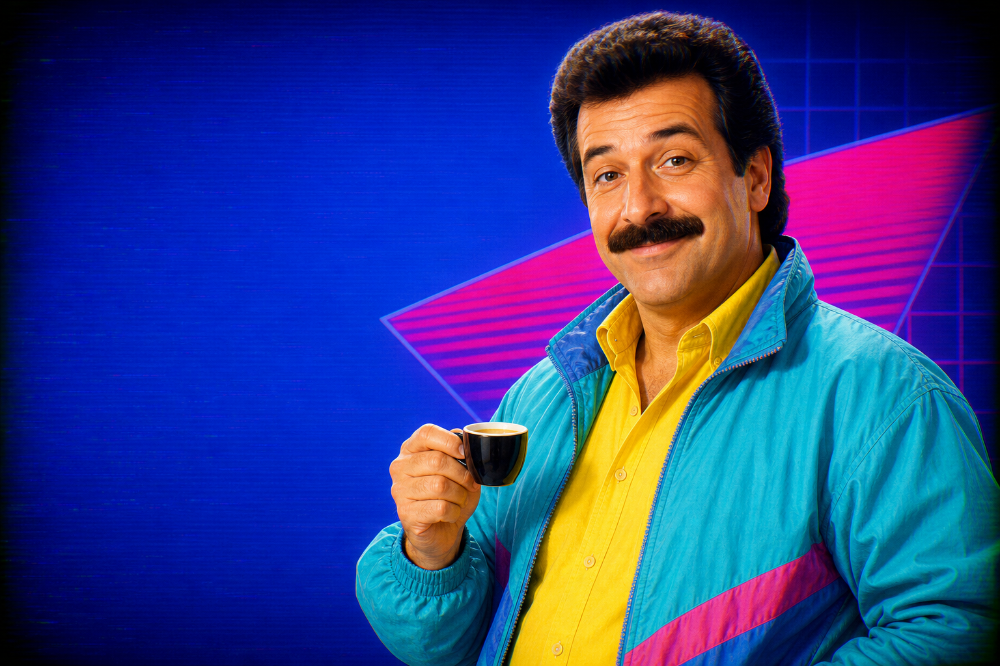

ПО ВЕСУ
Точность ±0,3 г, обычно — до ±0,1 г.
ПРЯМОЙ ЭФИР
ЗАКАЗАТЬ СЕЙЧАС ☎КАНАЛ 83 · КОФЕЙНЫЙ ПАТРУЛЬ
В эфире — FUDOVA G83EW. Помол по весу, 83-мм жернова и точность, которую заметит даже ваш самый суровый гость.
ХОЧУ ТОЧНУЮ ДОЗУ ▶

ТЕЛЕМАГАЗИН
ДЛЯ БАРИСТА
ПЯТЬ ПРИЧИН НЕ МАХАТЬ РУКОЙ НА РЕЦЕПТ
Точность ±0,3 г, обычно — до ±0,1 г.
Премиальные итальянские жернова для ровного помола.
Распознаёт холдер и начинает работу сам.
Микрометрическая регулировка размера помола.
Прочные материалы для ежедневной нагрузки.

ТЕХНИЧЕСКАЯ ПАУЗА
НЕ ПЕРЕКЛЮЧАЙТЕСЬ
Дядя Эспрессо передаст заявку специалисту — тот перезвонит и расскажет о поставке.